Types, inferred and suggested
You never declare a type in MnL. Types are inferred from the blocks you attach, and the language shows you its working — in the colour of each block, and in the coloured suggestion box sitting on every input you have not filled yet.
Type inference
The term type of a block depends on what is attached to it. While a block is incomplete its term type
defaults to any.
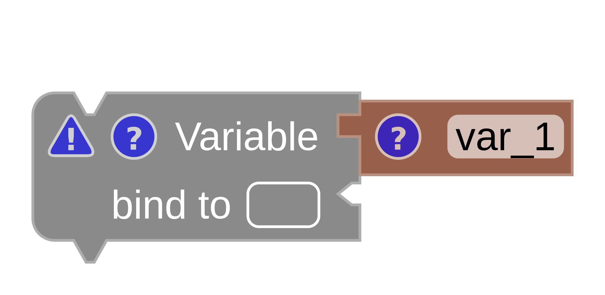
any.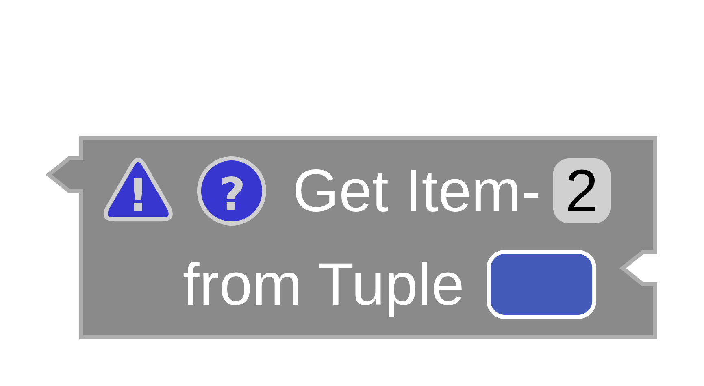
any.Once the block is complete, the type is inferred. In Fig. 3 the variable’s type comes from the ASCII → Char block attached to it; in Fig. 4 the operator’s type comes from the second inhabitant of the tuple it is projecting out of.
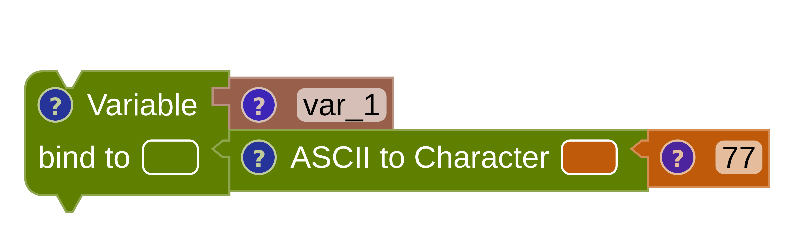
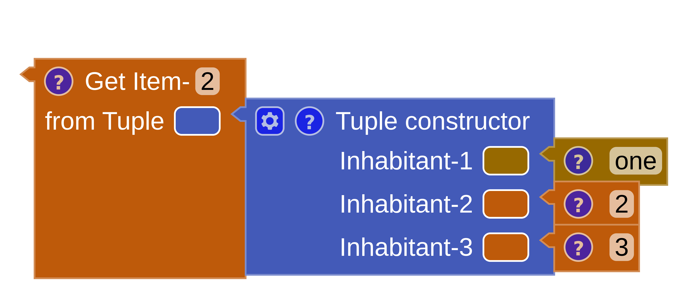
number from a tuple item.Two places tell you the inferred type: the info popup on the block, and the block’s own colour. The status bar summarises the whole program — Types: OK means every block type-checks.
Type suggestion
This is the feature that makes assembling a program feel guided rather than guessed. MnL colours the rounded suggestion box next to each empty input notch with the type it expects there.
To begin with, the suggestion box carries the colour of any — dark silver. As soon
as the type can be inferred, the colour changes to match.
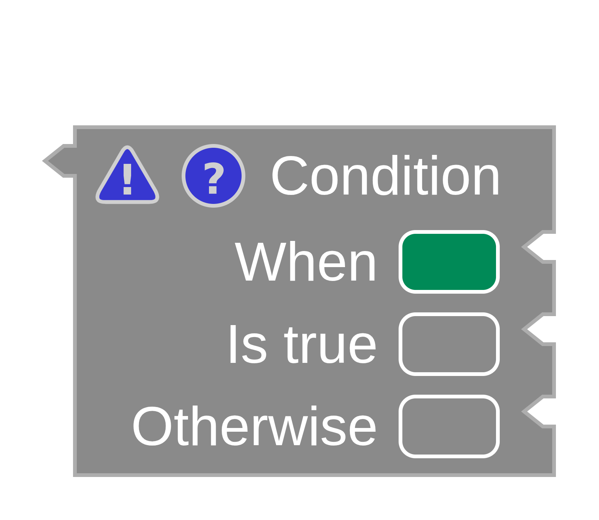
any.Attach something and MnL builds a type from its constraint rules, then recolours the remaining suggestion boxes. A block in this state — some inputs filled, some still empty — is a partially completed block.
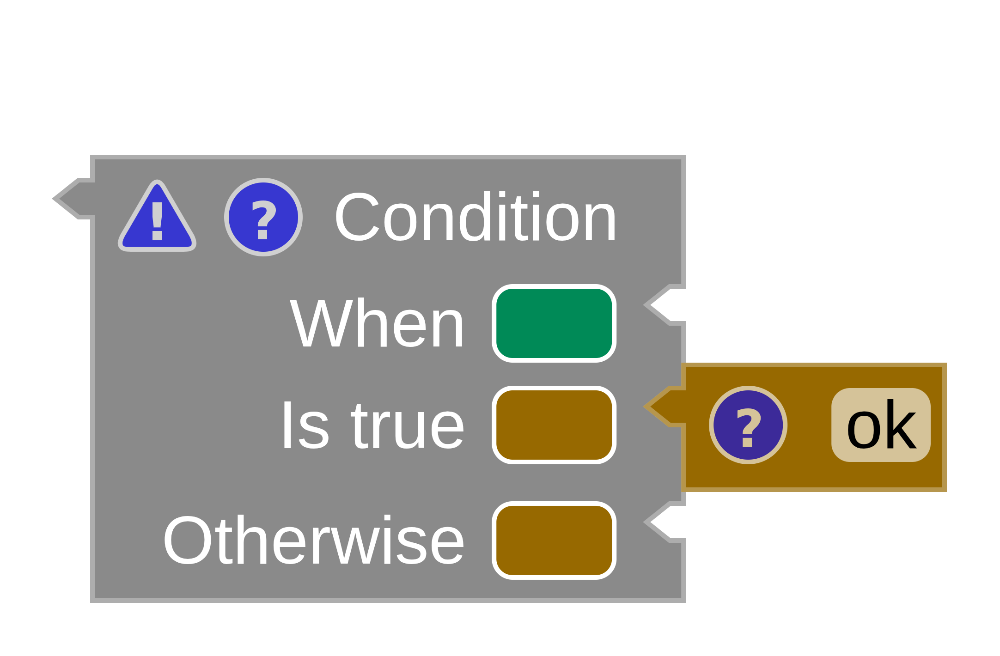
Reading the colours
Once every input notch is connected, the block is completed — and you can check it against the typing rule by eye. In Fig. 7 the block attached to the Otherwise input does not comply: the rule requires a green block, and a yellow one has been supplied.
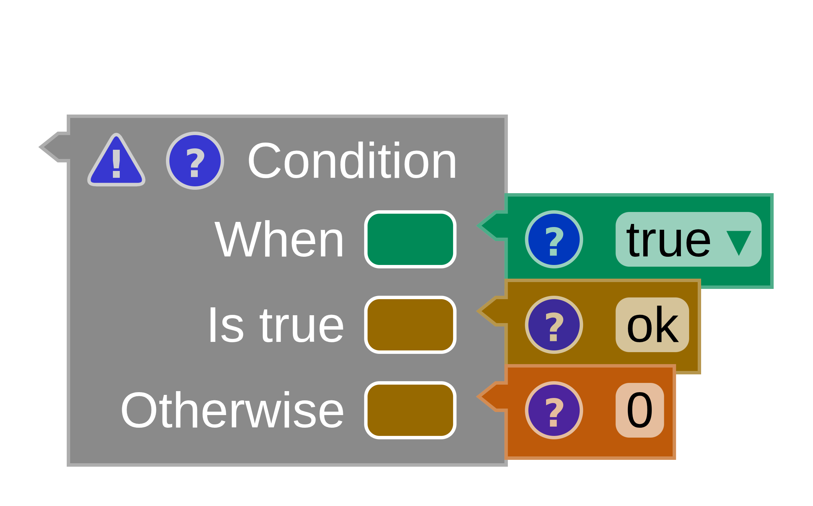
- Green is the colour of type
string. - Yellow is the colour of type
number.
A branch of an If / Else must agree with the other branch, so a green and a yellow block in the two branches is always an error.
Where a type comes from
The type constraint builder looks in a fixed order: the attached input blocks first, then the parent block. When nothing attached to a block determines its type, but the block has a parent, the type is inferred from that parent instead.
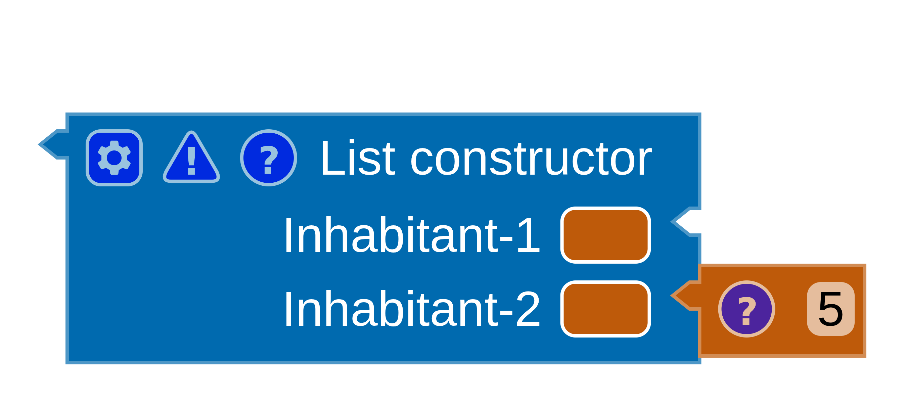
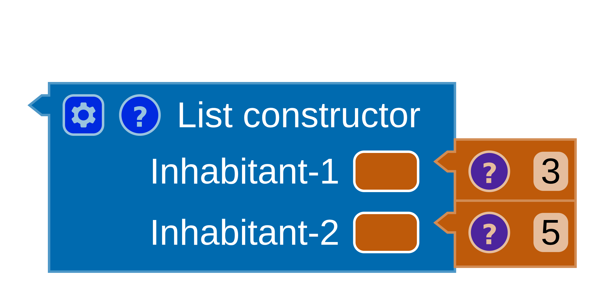
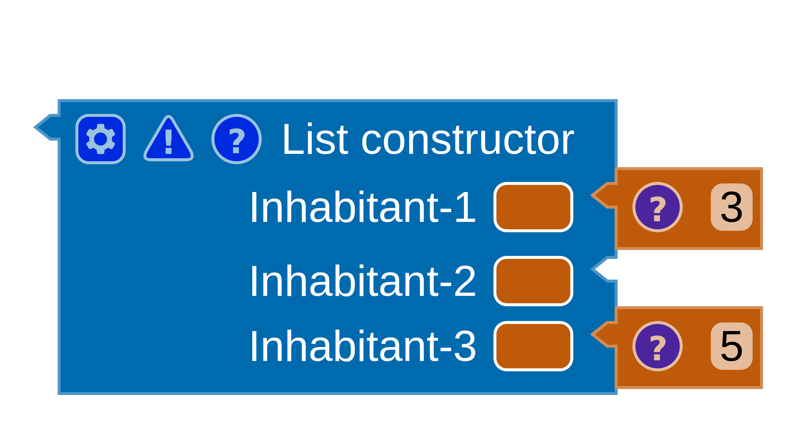
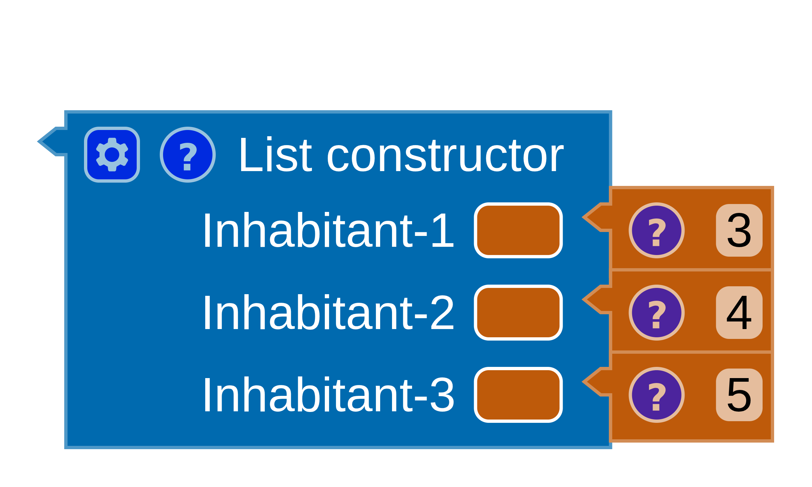
If you want to see the reasoning written out rather than coloured in, open the Typing tab of the code panel — MnL prints the full derivation, rule by rule. See the typing derivation.